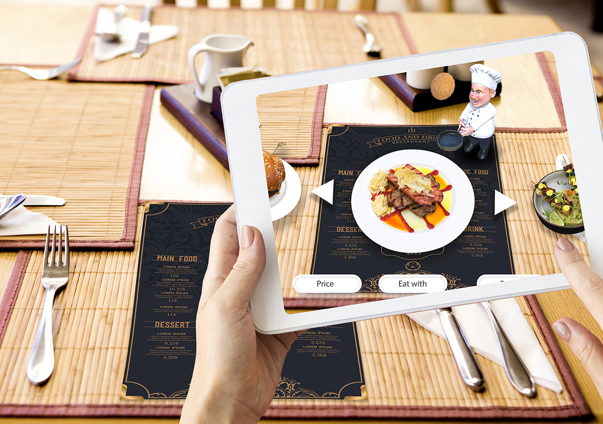

ASCHALIN is an augmented reality (AR) restaurant that incorporates AR technology to enhance the dining experience for customers. It combines the digital world with the physical environment, allowing users to interact with virtual elements in real-time.